Study 18 · 6 October 2026
Looks
The coming-soon page on white, smoother, in eight looks from Study 17. Switch looks live at the top of the page.
Open the page (move your mouse)Smoother
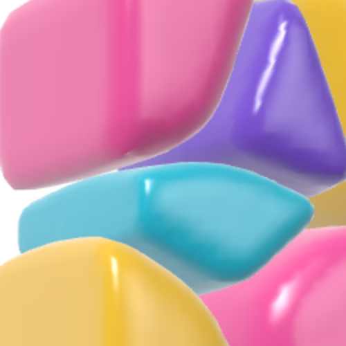
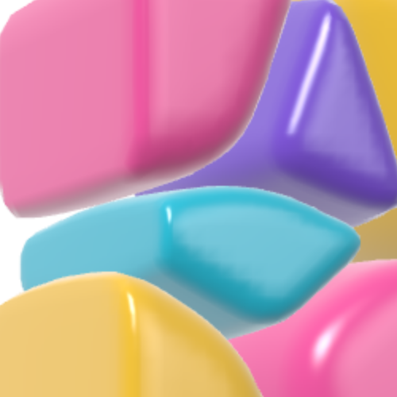
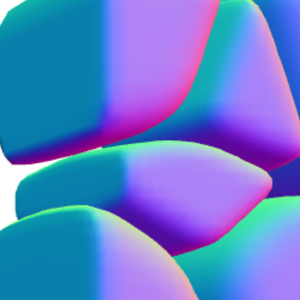
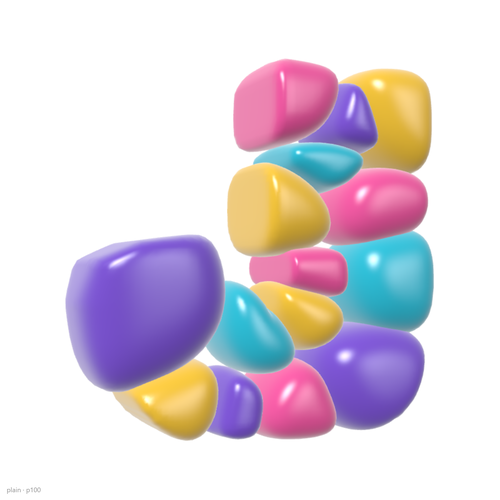
Five ideas
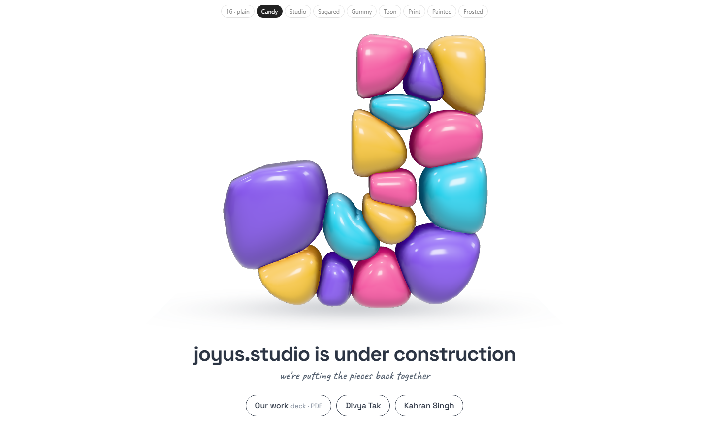
CandyLacquer, studio light, tinted shade baked where stones touch.cheap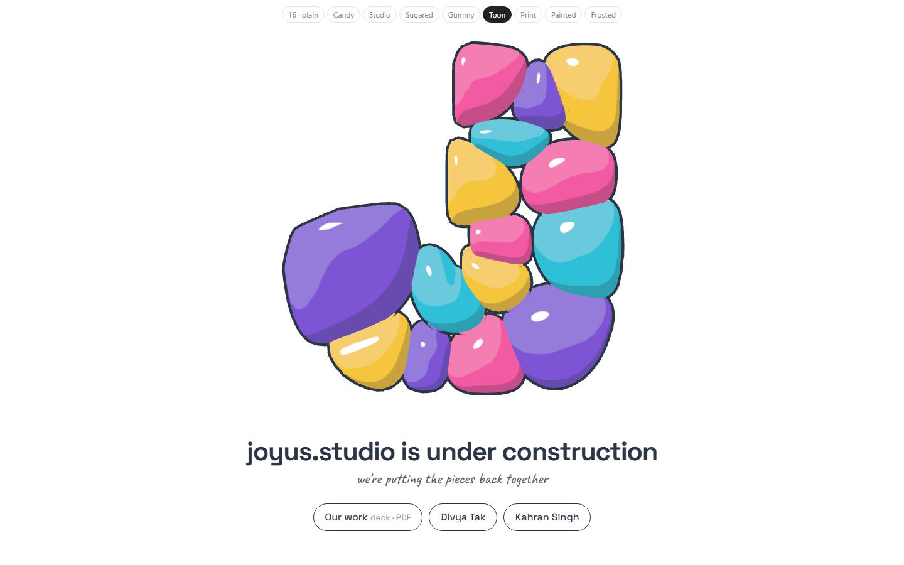
ToonLight in three steps and an ink line. Reads like the comics.cheap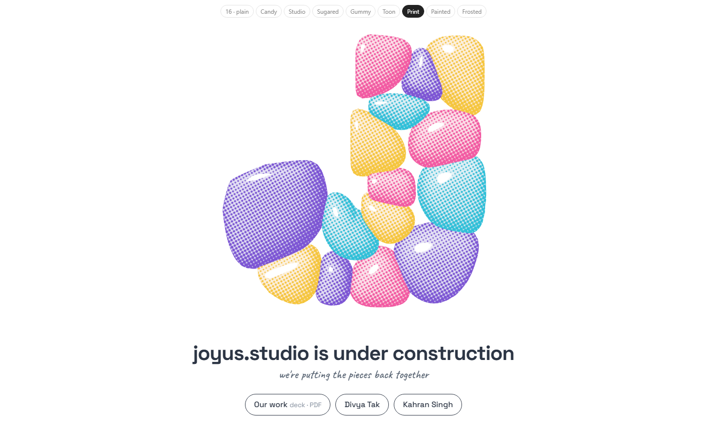
PrintShade as halftone dots, ink per stone. Flatter as form.cheap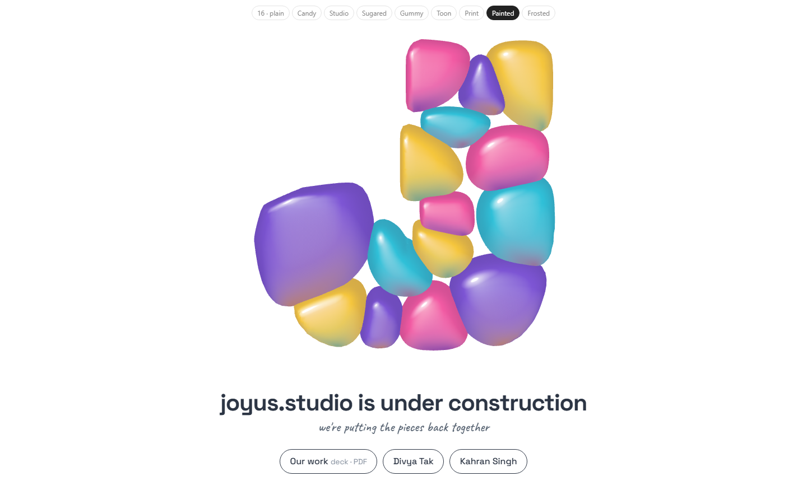
PaintedLight is a painted sphere; each stone picks up the next colour below.cheapest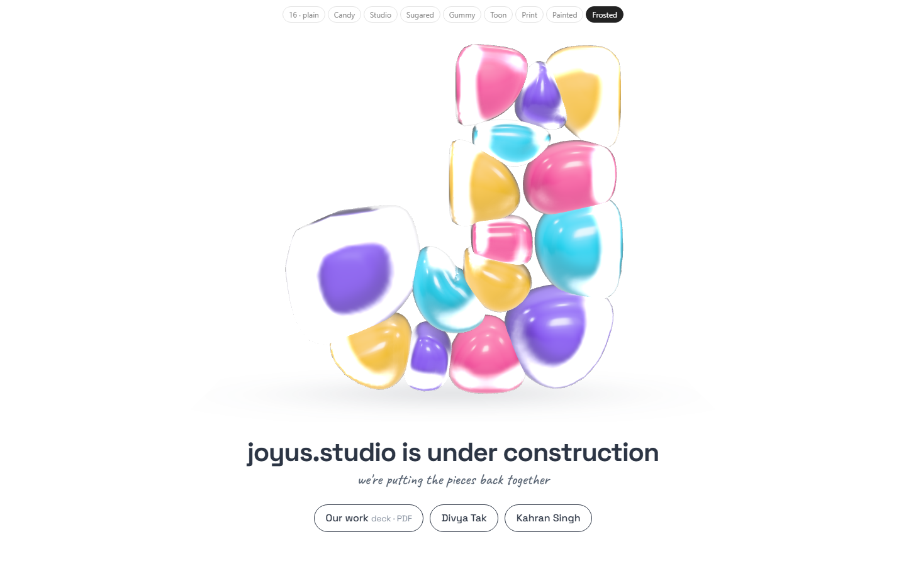
FrostedA candy core in a milky shell. Most distinct; lags a little in motion.heavyCandy's finishes
Measured too close to Candy to count as their own ideas (under 15 apart; the five above are 24+).
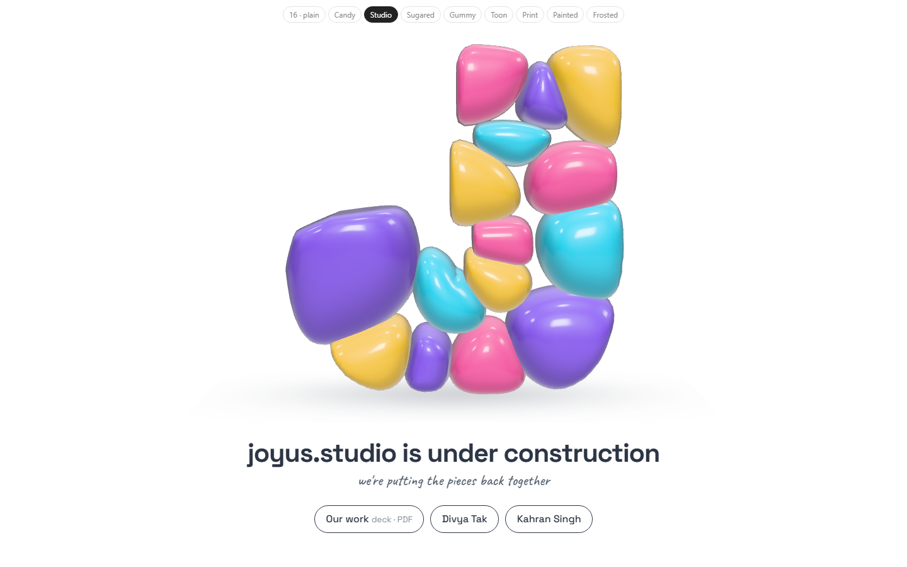
StudioCandy without the baked shade: stones float.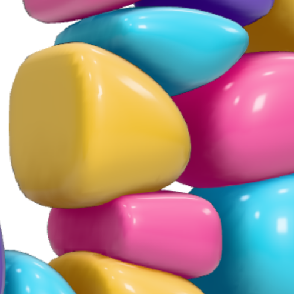
Candy, closeThe seams carry the depth.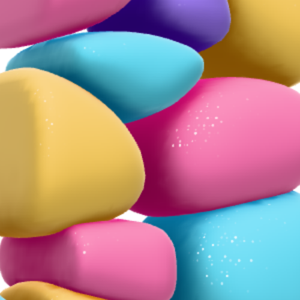
SugaredMatte velvet and sugar glints. Glints show in motion.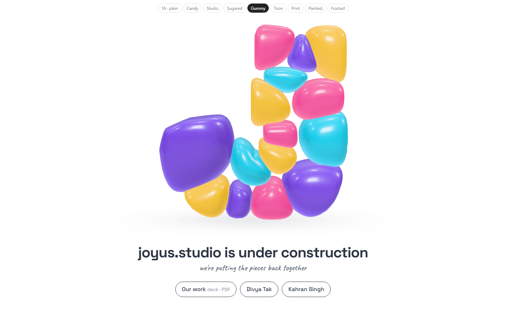
GummyEdges glow in their own colour. Subtle.Wrong turns
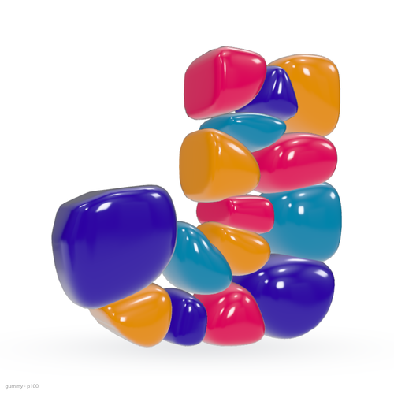
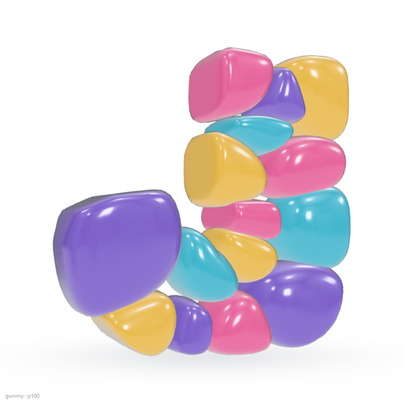
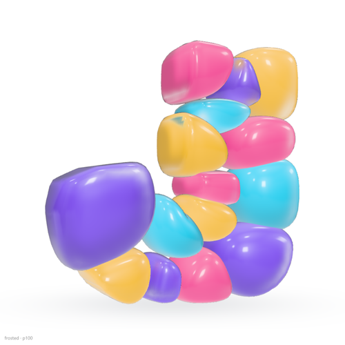
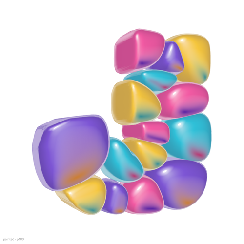
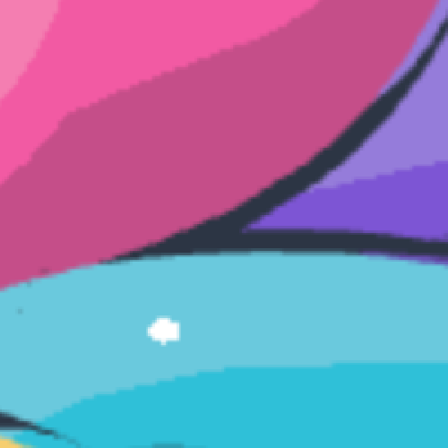

Open
- Which idea? Then one study taking it all the way.
- Still open from Study 16: deck link, your site's address, homepage only or every page.
Tests: page-test.mjs runs every look on the page in a browser (56 checks); distinct.py measures how different each look is; both read by check.cjs. The lab renders any look still.